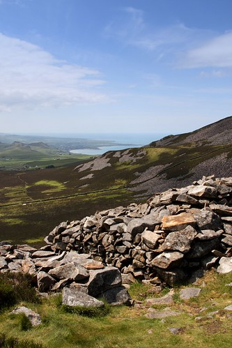

Entrance to Tre’r Ceiri
 Entrance from the West
Entrance from the West
Tre’r Ceiri is the most famous Iron Age hillforts in Gwynedd, and one could argue that Tre’r Ceiri is by far the most stunning example. The walls and the roundhouses are certainly very noticeable to anyone who visits the site.
Looking from the entrance towards the South-WestTre'r Ceiri lies on the easternmost summit of the three peaks of yr Eifl on the Llŷn Peninsula, and the villages of Llanaelhaearn and Trefor are at the foot of the mountain. At the highest point, the land rises to 485 meters above sea level, and with views over Llŷn to the west, Anglesey to the north and Snowdonia to the east, There is little real information about exactly when the fort was founded, but archaeologists are in broad agreement that people reused the fort during the Roman period. The likelihood is that the initial period dates to the last centuries before Christ. There followed a that there was a dormant period, where the fort was abandoned, and then the period where Tre’r Ceiri was reused, following the Roman Conquest. Therefore, it is interesting to try to imagine the relationship between the local Celtic tribe and the Romans over at Segontium.
 Entrance to Tre'r Ceiri from the South-West
Entrance to Tre'r Ceiri from the South-West
In English, Tre’r Ceiri can be translated as 'Town of the Giants' and we get a hint that ‘ceiri’ was the plural of ‘cawr’ (giant) in the dialect of Caernarfonshire. These old names that existed before archaeologists began to analyze and examine these sites and began to set definite dates for them is a very interesting topic − perhaps this is how local inhabitants explained that such an ancient construction existed at the top of the mountain – it must have been the work of the giants. The name of Stonehenge in Welsh, Côr y Cewri, has a similar story – a human attempt to explain a remarkable construction.
The fort consisted of two main entrances, from the south-west and from the north-west, and there were three smaller entrances (postern) on the east, north and west sides. A very interesting feature of the smaller entrance on the north side of the fort (which is effectively more of a hole in the wall compared to the two main entrances) is the capstone over the door, or lintel. This capstone and part of the walls were repaired by Gwynedd Archaeological Trust in 1990-94. For reference, any stone re-erected by the Trust is marked by a small round hole on the side of the stone.